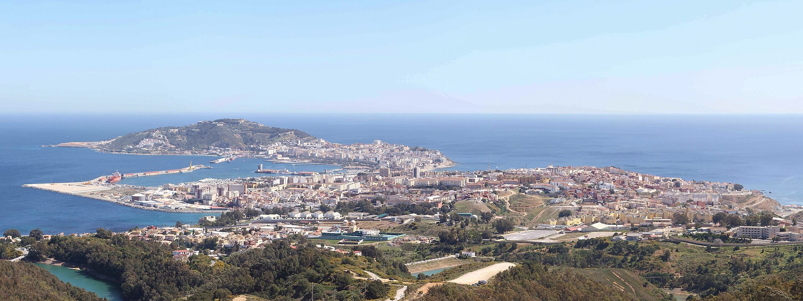

Ceuta
Area: 18.5 sq km (7.1 sq mi)
Population: 84,222
Ceuta is an autonomous city in Spain on the North African coast. Bordered by Morocco, it lies between the Mediterranean Sea and the Atlantic Ocean. Ceuta is one of the special territories of members of the European Economic Area: it is part of the Schengen area, but with specific provisions such as border checks between Ceuta and European Spain.Phoenicians founded a settlement on the La Almina Peninsula, which had continuity under Roman and Byzantine rule (Septem Fratres). It was annexed to the early caliphates upon the Islamic conquest of the Maghreb, only to be destroyed during the Berber Revolt. It was rebuilt in the ninth century by Majkasa Ghomaras. For much of the Middle Ages, regional powers north and south of the Strait of Gibraltar vied for control over Ceuta, which was a key contested port in the so-called Battle of the Strait. In 1415, it was annexed to the Kingdom of Portugal. In 1580, it was annexed by the Hispanic Monarchy, and the city chose to remain under Spanish authority after 1640. Ceuta belonged to the Spanish province of Cádiz as a regular municipality until the passage of its Statute of Autonomy in March 1995, when it became an autonomous city.
Along with the Canary Islands, Ceuta was classified as a free port before Spain joined the European Union. Its population is predominantly made up of Spanish Christians and Arab Muslims, with a small minority of Sephardic Jews, and Sindhi Hindus from pre-partition India. Spanish is the official language of Ceuta, while Darija Arabic (in the Ceuta Arabic dialect) is also widely spoken.
Names
The name Abyla has been said to have been a Punic name ("Lofty Mountain" or "Mountain of God") for Jebel Musa, the southern Pillar of Hercules. The name of the mountain was in fact Habenna (Punic: 𐤀𐤁𐤍, ʾbn, "Stone" or "Stele") or ʾAbin-ḥīq (𐤀𐤁𐤍𐤇𐤒, ʾbnḥq, "Rock of the Bay"), about the nearby Bay of Benzú. The name was hellenized variously as Ápini (Ancient Greek: Ἄπινι), Abýla (Ἀβύλα), Abýlē (Ἀβύλη), Ablýx (Ἀβλύξ), and Abilē Stḗlē (Ἀβίλη Στήλη, "Pillar of Abyla") and in Latin as Abyla Mons ("Mount Abyla") or Abyla Columna ("the Pillar of Abyla").
The settlement below Jebel Musa was later renamed for the seven hills surrounding the site, collectively referred to as the "Seven Brothers" (Ancient Greek: Ἑπτάδελφοι, romanized: Heptádelphoi; Latin: Septem Fratres). In particular, the Roman stronghold at the site took the name "Fort at the Seven Brothers" (Castellum ad Septem Fratres). This was gradually shortened to Septem (Σέπτον Sépton) or, occasionally, Septum or Septa. These clipped forms continued as Berber Sebta and Arabic Sabtan or Sabtah (سبتة), which themselves became Ceuta in Portuguese (pronounced [ˈseu̯tɐ]) and Spanish (locally pronounced [ˈseu̯ta]).
History
Ancient
Controlling access between the Atlantic Ocean and the Mediterranean Sea, the Strait of Gibraltar is an important military and commercial chokepoint. The Phoenicians realized the extremely narrow isthmus joining the La Almina Peninsula to the African mainland made Ceuta eminently defensible and established an outpost there early in the 1st millennium BC.
The Greek geographers record it by variations of Abyla, the ancient name of nearby Jebel Musa. Beside Calpe, the other Pillar of Hercules now known as the Rock of Gibraltar, the Phoenicians established Kart at what is now San Roque, Spain. Other good anchorages nearby became Phoenician and then Carthaginian ports at what are now Tangier, Morocco and Cádiz.
After Carthage's destruction in the Punic Wars, most of the Maghreb was left to the Roman client states of Numidia and Mauretania. Punic culture continued to thrive in what the Romans knew as "Septem". After the Battle of Thapsus in 46 BC, Caesar and his heirs began annexing North Africa directly as Roman provinces. As late as Augustus, most of Septem's Berber residents continued to speak and write in Punic.
Caligula executed the Mauretanian king Ptolemy in AD 40 and seized his kingdom, which Claudius organised in AD 42, placing Septem in the province of Tingitana and raising it to the level of a colony. It was Romanized and thrived into the late 3rd century, trading heavily with Roman Spain and becoming well known for its salted fish. Roads connected it overland with Tingis (Tangiers) and Volubilis. Under Theodosius I in the late 4th century, Septem still had 10,000 inhabitants, nearly all Christian citizens speaking African Romance, a local dialect of Latin.
Medieval
Vandals, probably invited by Count Boniface as protection against the empress dowager Galla Placidia, crossed the strait near Tingis around 425 and swiftly overran Roman North Africa. Their king, Gaiseric, focused his attention on the rich lands around Carthage. Although the Romans eventually accepted his conquests and he continued to raid them anyway, he soon lost control of Tingis and Septem in a series of Berber revolts. When Justinian decided to reconquer the Vandal lands, his victorious general Belisarius continued along the coast, making Septem a westernmost outpost of the Byzantine Empire around 533. Unlike the former ancient Roman administration, Eastern Rome did not push far into the hinterland and made the more defensible Septem their regional capital in place of Tingis.
The plague of Justinian, less capable successors, and overstretched supply lines forced a retrenchment and left Septem isolated. It is likely that its count (comes) was obliged to pay homage to the Visigoth Kingdom in Spain in the early 7th century. There are no reliable contemporary accounts of the end of the Islamic conquest of the Maghreb around 710. Instead, the rapid Muslim conquest of Spain produced romances concerning Count Julian of Septem and his betrayal of Christendom in revenge for the dishonor that befell his daughter, Florinda la Cava, at King Roderick's court. Allegedly with Julian's encouragement and instructions, the Berber convert and freedman Tariq ibn Ziyad took his garrison from Tangiers across the strait and overran the Spanish so swiftly that both he and his master Musa bin Nusayr fell afoul of a jealous caliph, who stripped them of their wealth and titles.
After the death of Julian, sometimes also described as a king of the Ghomara Berbers, Berber converts to Islam took direct control of what they called Sebta. It was then destroyed during their great revolt against the Umayyad Caliphate around 740. Sebta remained a small village of Muslims and Christians surrounded by ruins until its resettlement in the 9th century by Mâjakas, chief of the Majkasa Berber tribe, who started the short-lived Banu Isam dynasty. His great-grandson briefly allied his tribe with the Idrisids.
Banu Isam rule ended in 931, when he abdicated in favour of Abd ar-Rahman III, the Umayyad emir of Córdoba who had self-proclaimed as a caliph in 929. Through the overseas conquests of Ceuta in 931 and Melilla in 927 that allowed enforcement of direct political and military influence in the fragmented landscape of the north-African coast, crowned by the skillful political subversion resulting in the 944 revolt in eastern Berbery, the power exerted by the Umayyad Caliphate (engaged in struggle against the Fatimids) in the Western Mediterranean took hold.
Chaos ensued with the collapse of the Caliphate of Córdoba in the early 11th century. In the wake of this, the Banū Hammūd established a petty kingdom, and nominal caliphate, centered in Málaga and Ceuta—the so-called Taifa of Málaga—with Málaga as a capital and Ceuta hosting the heir's residence. In 1056, the link with Málaga was severed as it was conquered by the Banu Ziri, while Suqut al-Bargawati remained in power in Ceuta, styling as a caliph after 1061.
Starting in 1084, the Almoravid Berbers ruled the region until 1147, when the Almohads conquered the land. Apart from Ibn Hud's rebellion in 1232, they ruled until the Tunisian Hafsids established control. The Hafsids' influence in the west rapidly waned, and Ceuta's inhabitants eventually expelled them in 1249. After this, a period of political instability persisted, under competing interests from the Marinids and Granada as well as autonomous rule under the native Banu al-Azafi. The Fez-based Marinid sultanate finally conquered the region in 1387, with assistance from Aragon.
Portuguese
On the morning of 21 August 1415, King John I of Portugal led his sons and their assembled forces in a surprise assault that would come to be known as the Conquest of Ceuta. The 45,000 Portuguese who traveled on 200 ships caught the defenders of Ceuta off guard and suffered only eight casualties. By nightfall the town was captured. On the morning of 22 August, Ceuta was in Portuguese hands.
Álvaro Vaz de Almada, 1st Count of Avranches was asked to hoist what was to become the flag of Ceuta, which is identical to the flag of Lisbon, but in which the coat of arms derived from that of the Kingdom of Portugal was added to the center. The original Portuguese flag and coat of arms of Ceuta remained unchanged, and the modern-day Ceuta flag features the configuration of the Portuguese shield.
John's son Henry the Navigator distinguished himself in the battle, being wounded during the conquest. The looting of the city proved to be less profitable than expected for John I, so he decided to keep the city to pursue further enterprises in the area. From 1415 to 1437, Pedro de Meneses was the first governor of Ceuta. The Marinid Sultanate started the 1419 siege. They were defeated by the first governor of Ceuta, before reinforcements arrived in the form of John, Constable of Portugal and his brother Henry the Navigator, who were sent with troops to defend Ceuta.
Under King John I's son, Duarte, the city of Ceuta rapidly became a drain on the Portuguese treasury. Trans-Saharan trade journeyed instead to Tangier. It was soon realized that without the city of Tangier, possession of Ceuta was worthless. In 1437, Duarte's brothers Henry the Navigator and Fernando, the Saint Prince persuaded him to launch an attack on the Marinid sultanate. The resulting Battle of Tangier (1437), led by Henry, was a total failure. In the resulting treaty, Henry promised to deliver Ceuta back to the Marinids in return for allowing the Portuguese army to depart unmolested, which he reneged on.
The Portuguese conquest marked Portugal's first hold in the strategic area of the Strait of Gibraltar. The development had a mixed reception from Castile, which had to the same in 1292 in the wake of the Conquest of Tarifa on the north side, as it marked the arrival of a potential challenger for hegemony in the area. Whatever the case, the authorities soon established collaboration with Tarifa across the Strait, and throughout the 15th century Ceuta relied on support from coastal Andalusian towns. Cross strait collaboration with Ceuta and other Portuguese outposts in the area (Ksar es-Seghir, Tangier, and Asilah) from Gibraltar and Málaga or Cádiz and Puerto de Santa María (depending on prevailing winds) was sustained in the 1520s. In the case of Ceuta, this collaboration strengthened after 1580.
Portuguese expansion throughout the coasts of the Maghreb took place on the basis of the presence of grain, cattle, sugar, and textiles, as well as fish, hides, wax, and honey. The city was recognized as a Portuguese possession by the Treaty of Alcáçovas (1479) and by the Treaty of Tordesillas (1494). In the 1540s, the Portuguese began building the Royal Walls of Ceuta as they are today including bastions, a navigable moat and a drawbridge. Some of these bastions are still standing, like the bastions of Coraza Alta, Bandera and Mallorquines. Luís de Camões lived in Ceuta between 1549 and 1551, losing his right eye in battle, which influenced his work of poetry Os Lusíadas.
Hispanic Monarchy
In August 1578 King Sebastian of Portugal died at the Battle of Alcácer Quibir (known as the Battle of Three Kings) in what is today northern Morocco, without descendants, triggering the 1580 Portuguese succession crisis. His grand-uncle, the elderly Cardinal Henry, succeeded him as king, but also had no descendants, having taken holy orders. When the he died a year and a half later, in January 1580, three grandchildren of King Manuel I of Portugal claimed the throne: Infanta Catarina, Duchess of Braganza, António, Prior of Crato, and Philip II of Spain, the uncle of former King Sebastian of Portugal. In the ensuing war, which lasted for three years, Philip eventually prevailed and was crowned King Philip I of Portugal in April 1581 at the Cortes meeting in Tomar, thus uniting under a dynastic union the crown of Portugal (along with its overseas empire) with the crowns of Castille and Aragon (which were already under a dynastic union since 1479).
During the Hispanic Monarchy, which lasted from 1580 to 1640, Ceuta attracted many residents of mainland Spanish origin and eventually became the only city in the Portuguese Empire that sided with Madrid when Portugal regained its independence in the Portuguese Restoration War of 1640–1668.
During the early modern period, Ceuta served as a defensive outpost against Barbary corsairs from the Barbary Coast of North Africa who raided the Spanish coast.
Spanish
On 1 January 1668, King Afonso VI of Portugal recognised the formal allegiance of Ceuta to Spain and ceded Ceuta to King Carlos II of Spain by the Treaty of Lisbon. The city was attacked by Moroccan forces under Moulay Ismail during the Siege of Ceuta (1694–1727), the longest siege in history. During these years, the city underwent changes, leading to the loss of its "Portuguese" character. While most of the military operations took place around the Royal Walls of Ceuta, there were also small-scale penetrations by Spanish forces at various points on the Moroccan coast, and ships were seized in the Strait of Gibraltar. In 1790–1791, Ceuta was besieged by the Moroccan army, but the siege was unsuccessful and the city remained under Spanish control. From 1810 to 1815, during the Napoleonic Wars, British forces occupied Ceuta. Disagreements regarding the border of Ceuta resulted in the War between Spain and Morocco of 1859–1860, which ended at the Battle of Tetuán.
In July 1936, General Francisco Franco took command of the Spanish Army of Africa and rebelled against the Spanish republican government; his military uprising led to the Spanish Civil War of 1936–1939. Franco transported troops to mainland Spain in an airlift using transport aircraft supplied by Germany and Italy. Ceuta became one of the first battlegrounds of the uprising: General Franco's rebel nationalist forces seized Ceuta, while at the same time the city came under fire from the air and sea forces of the republican government. The Llano Amarillo monument was erected to honor Francisco Franco and inaugurated on 13 July 1940. The tall obelisk has since been abandoned, but the shield symbols of the Falange and Imperial Eagle remain visible.
Following the 1947 partition of India, a number of Sindhi Hindus from current-day Pakistan settled in Ceuta, adding to a small Hindu community that had existed in Ceuta since 1893, connected to Gibraltar's Hindu community. When Spain recognized the independence of Spanish Morocco in 1956, Ceuta and the other plazas de soberanía remained under Spanish rule. Spain considered them integral parts of the Spanish state, but the Moroccan state has disputed this claim.
Culturally, modern Ceuta is part of the Spanish region of Andalusia. It was attached to the province of Cádiz until 1995. The Iberian coast is 20 km (12.5 miles) away. It is a cosmopolitan city, with a large ethnic Arab-Berber Muslim population (although the Berber presence is smaller in Ceuta than in Melilla, Arab Muslims comprise approximately half of Ceuta's population). Small minorities of Sephardic Jewish and Hindu are also present.
On 5 November 2007, King Juan Carlos I and Queen Sofía visited Ceuta and Melilla, sparking enthusiasm from the local population and protests from the Moroccan government, which led to a brief diplomatic conflict. It was the first time a Spanish head of state had visited the two cities since 1927. Since 2010, Ceuta and Melilla have declared the Muslim holiday of Eid al-Adha, or Feast of the Sacrifice, an official public holiday, the first time a non-Christian religious festival has been officially celebrated in Spanish ruled territory since the Reconquista.
In summer 2026, unrest occurred in Ceuta after approximately 70,000 migrants breached the border with Morocco.
Geography
Ceuta is separated by 17 km (11 mi) from the province of Cádiz on the Spanish mainland by the Strait of Gibraltar. It shares a 6.4 km (4 mi) land border with M'diq-Fnideq Prefecture of the Kingdom of Morocco. It has an area of 18.5 km (7 sq mi; 4,571 acres). Ceuta is dominated by Monte Anyera, a hill along its western frontier with Morocco, which is guarded by a Spanish military fort. Monte Hacho on the La Almina Peninsula overlooking the port is one of the possible locations of the southern pillar of the Pillars of Hercules of Greek legend. The other possibility is Jebel Musa.
Important Bird Area
The Ceuta Peninsula has been recognised as an Important Bird Area (IBA) by BirdLife International because the site is part of a migratory bottleneck, or choke point, at the western end of the Mediterranean for large numbers of raptors, storks and other birds flying between the Iberian Peninsula and the Maghreb. These include European honey buzzards, black kites, short-toed snake eagles, Egyptian vultures, griffon vultures, black storks, white storks and Audouin's gulls.
Climate
Ceuta has a maritime-influenced Mediterranean climate, similar to such nearby Spanish and Moroccan cities as Tarifa, Algeciras, Tangier, and Tétouan. The average diurnal temperature variation is relatively low. The average annual temperature is 18.8 °C (65.8 °F) with average yearly highs of 21.4 °C (70.5 °F) and lows of 15.7 °C (60.3 °F), though the Ceuta weather station has only been in operation since 2003. Ceuta has relatively mild winters for the latitude. Summers are warm yet milder than in the interior of Southern Spain, due to the moderating effect of the Straits of Gibraltar. Summers are very dry. Yearly precipitation is still at 849 mm (33.4 in), which could be considered a humid climate if the summers were not so arid.
Government and administration
Since 1995, Ceuta has been one of the two autonomous cities of Spain (along with Melilla). Ceuta is known officially in Spanish as Ciudad Autónoma de Ceuta (English: Autonomous City of Ceuta), with a rank between a standard municipality and an autonomous community. Ceuta is part of the territory of the European Union. The city was a free port before Spain joined the European Union in 1986. Today, Ceuta has a low-tax system within the Economic and Monetary Union of the European Union.
Since 1979, Ceuta has held elections to its 25-seat assembly every four years. The leader of its government was the Mayor until the Autonomy Statute provided for the new title of Mayor-President. As of 2011, the People's Party (PP) won 18 seats, keeping Juan Jesús Vivas as Mayor-President, which he has been since 2001. The remaining seats are held by the regionalist Caballas Coalition (4) and the Socialist Workers' Party (PSOE, 3).
Owing to its small population, Ceuta elects only one member of the Congress of Deputies, the lower house of the Cortes Generales (the Spanish Parliament). As of the November 2023 general election, this post is held by Javier Celaya Brey of the PP, who gained it from Vox. Ceuta is subdivided into 63 barriadas ("neighborhoods"), such as Barriada de Berizu, Barriada de P. Alfonso, Barriada del Sarchal, and El Hacho. Ceuta maintains its own police force.
Defence and Civil Guard
Defence of the territory is the responsibility of the Spanish Armed Forces's General Command of Ceuta (COMGECEU). The Spanish Army's combat components of the command include:
54th Regulares Infantry Regiment based in González Tablas barracks;
2nd Tercio Duke of Alba Regiment of the Spanish Legion based in the Seraglio-Recarga cantonment;
3rd "Montesa" Cavalry Regiment (RC-3) located in the Colonel Galindo barracks and equipped with Leopard 2 main battle tanks and Pizarro infantry fighting vehicles;
30th Mixed Artillery Regiment, one group equipped with 155/52mm towed howitzers and the other with Mistral short-range SAMs and 35/90 SKYDOR/35/90 GDF-007 anti-aircraft guns fulfilling an air defence role; and
7th Engineer Regiment.The command also includes its headquarters battalion as well as logistics elements.
In 2023, the Spanish Navy replaced the Aresa-class patrol boat P-114 in the territory with the Rodman-class patrol boat Isla de León.
Ceuta itself is only 113 km (70 mi) distant from the main Spanish naval base at Rota on the Spanish mainland. The Spanish Air Force's Morón Air Base is also within 135 km (84 mi) proximity.
The Civil Guard is responsible for border security and protects both the territory's fortified land border as well as its maritime approaches against frequent, and sometimes significant, migrant incursions.
Economy
The official currency of Ceuta is the euro. It is part of a special low tax zone in Spain. Ceuta is one of two Spanish port cities on the northern shore of Africa, along with Melilla. They are historically military strongholds, free ports, oil ports, and also fishing ports. Today, Ceuta's economy heavily depends on its port (now in expansion), and its industrial and retail centres.
Lidl, Decathlon and El Corte Inglés have branches in Ceuta. There is also a casino. Border trade between Ceuta and Morocco is active because of advantage of tax-free status. Thousands of Moroccan women are involved in the cross-border porter trade daily, as porteadoras. The Moroccan dirham is used in such trade, although prices are marked in euros.
Transport
The city's Port of Ceuta is connected to the Port of Algeciras across the Strait of Gibraltar by multiple daily sailings of ferries. A single road border checkpoint, near Fnideq, allows for cars and pedestrians to travel between Morocco and Spain. An additional border crossing for pedestrians exists between Benzú and Belyounech on the northern coast. The rest of the border is closed and inaccessible. There is a bus service throughout the city, and while it does not pass into neighbouring Morocco, it services both frontier crossings.
The Ceuta Heliport is now used to connect the city to mainland Spain by air.
Hospitals
The University Hospital of Ceuta, run by INGESA [es]
The following hospitals are located in Ceuta:
University Hospital of Ceuta, established in 2010, 252 beds
Primary Care Emergency Services Jose Lafont
Ceuta Medical Centre
Spanish Military Hospital (500 beds in 1929, 2020 listed as a clinic)
Demographics
In 2024, its population was 83,299.
Due to its location, Ceuta is home to a mixed ethnic and religious population. The two main religious groups are Christians and Muslims. In 2006, 51% of the population was Christian and 48% was Muslim. In a 2018 estimate, approximately 68% of the city's population was born in Ceuta. Spanish is the official language of Ceuta. Moroccan Arabic (Ceuta Arabic dialect) is also widely spoken. In 2025, Spanish speakers were estimated to number nearly 60%, Arabic speakers 40–42%, and another 1% were Sindhi speakers.
Religion
Christianity has had a continuous presence in Ceuta from late antiquity, as evidenced by the ruins of a basilica in Ceuta's city-centre, and by accounts of the 1227 martyrdom of St. Daniel Fasanella and his Franciscans during the Almohad Caliphate. The town's medieval Grand Mosque had been built over a Byzantine-era church. In 1415, the year of the city's conquest, the Portuguese converted the Grand Mosque into Ceuta Cathedral. The present form of the cathedral dates to late-17th century renovations, combining baroque and neoclassical elements. It was dedicated to St Mary of the Assumption in 1726.
The Roman Catholic Diocese of Ceuta was established in 1417. It incorporated the Diocese of Tangier in 1570. The Diocese of Ceuta was a suffragan of Lisbon until 1675, when it became a suffragan of Seville. In 1851, Ceuta's administration was notionally merged into the Diocese of Cádiz and Ceuta as part of a concordat between Spain and the Holy See. The union was finalised in 1879. Small Jewish and Hindu minorities are also present.
Border control
Like Melilla, Ceuta's position on the Maghreb's Mediterranean poses a challenge both in terms of curbing illegal human and hashish trafficking (of which neighboring Morocco is the world's leading producer and exporter).
Regarding irregular migration, people breach the double fence separating Ceuta from Morocco in groups or use the sea to skirt around the Tarajal or Benzú border points. Notable large-scale breaches occurred in 2021 (approximately 8,000 people) and in 2026 (approximately 60,000 people). The Moroccan position towards Ceuta (and Melilla) displays many characteristics of a grey-zone strategy, of which the mobilisation of civilians is a key instrument.
Regarding drug trafficking, in addition to the use of hidden compartments in vehicles, traffickers have used narco-tunnels dug from Morocco.
Education
The University of Granada has undergraduate programmes at its campus in Ceuta. Like all areas of Spain, Ceuta is also served by the National University of Distance Education (UNED). While primary and secondary education are generally offered in Spanish only, a growing number of schools are entering the Bilingual Education Programme.